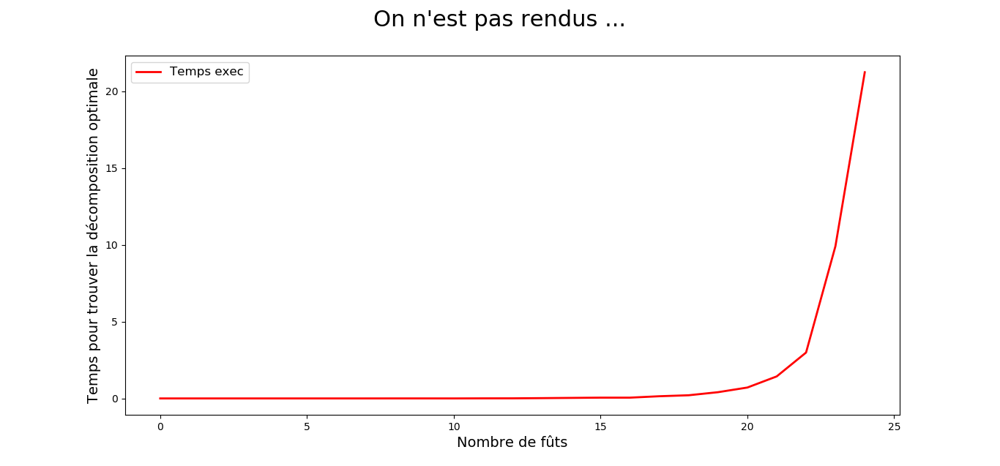
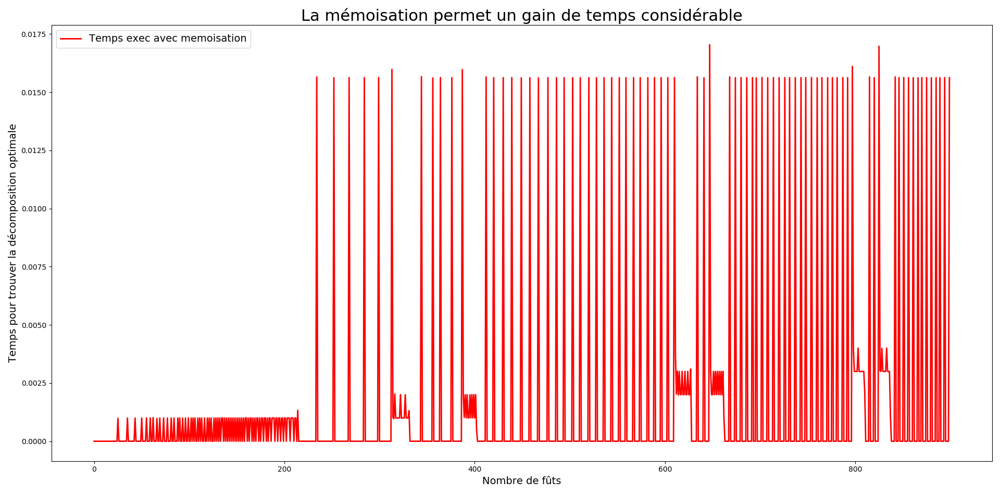
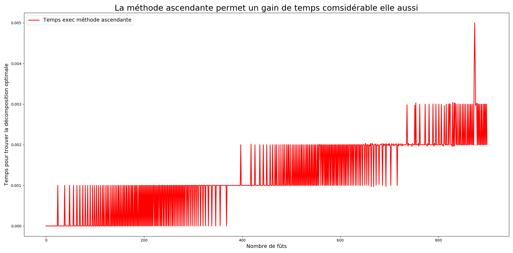
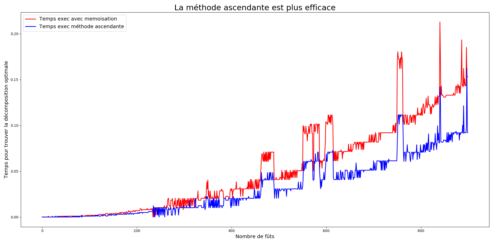

Algorithmique et complexité
Programmation dynamique
Pépin Rémi, Ensai, 2019

Les objectifs du cours
- Voir les limites des solutions récursives simples
- En comprendre les causes
- Découvrir la programmation dynamique
Le plan
- Exemple 1 : vente de fûts de bières
- Exemple 2 : multiplications chaînées de matrices
- La programmation dynamique
Exemple 1 :
Vente de bière
Le contexte
- Braserie artisanale
- Vente de fûts
- Différents acheteurs qui achètent par lots à différents prix
Les prix
| Acheteur i | 1 | 2 | 3 | 4 | 5 | 6 | 7 | 8 | 9 | 10 |
|---|---|---|---|---|---|---|---|---|---|---|
| Taille lot | 1 | 2 | 3 | 4 | 5 | 6 | 7 | 8 | 9 | 10 |
| Prix | 1 | 5 | 8 | 9 | 10 | 17 | 17 | 20 | 24 | 30 |
Le problème
Le but : maximiser votre profitProblème d'optmisation
Décomposer un lot de n fûts pour avoir le revenu maximal.
On peut ne pas décomposer le lot
Exemple
Vous voulez vendre 4 fûts
- \(p_4 = 9\)
- \(p_1 + p_3 = 9\)
- \(p_2 + p_2 = 10\)
- \(p_1 + p_1 + p_2 = 7\)
- \(p_1 + p_1 + p_1 + p_1 = 4\)
Formalisation
Si une solution optimale décompose notre stock de \(n\) fûts en \(k\) lots alors la décomposition \[n = i_1 + i_2 + ... + i_k\] en lot de taille \(i_1, i_2, ..., i_k\) offre le revenu maximal \[r_n = p_{i_1} + p_{i_2} + ... + p_{i_k}\]Premières valeurs
| Taille | Revenu max |
Décomposition |
| 1 | 1 | Pas de décomposition |
| 2 | 5 | Pas de décomposition |
| 3 | 8 | Pas de décomposition |
| 4 | 10 | 2+2 |
| 5 | 13 | 2+3 |
| 6 | 17 | Pas de décomposition |
| 7 | 18 | 1+6 ou 2+2+3 |
| 8 | 22 | 2+6 |
| 9 | 25 | 3+6 |
| 10 | 30 | Pas de décomposition |
Formalisation
Plus généralement, \[r_n=\max(p_n, r_1 + r_{n-1}, r_2 + r_{n-2}, ..., r_{n-1} + r_1)\] ou \[r_n= \max_{1 \leq i \leq n} \lbrace p_i + r_{n-i} \rbrace\]Analyse du problème
- Pour résoudre un problème de taille n on doit résoudre un problème plus petit
- Récursivité
- Solutions optimales du problème incluent solutions optimales sous problème
- Sous-structure optimale
Sous-structure optimale
Les solutions optimales du problème incorporent les solutions optimales des sous-problèmes associés que l'on peut résoudre de manière indépendante.
Implémentation déscendante naïve
Implémentation déscendante naïve
Fichier fut_recursif_naif.pyImplémentation déscendante naïve
Une idée du problème ?
Complexité exponentielle
+1 fût -> taille arbre x2
Complexité exponentielle 
Pire, on recalcule des choses déjà calculées !!
La programmation dynamique à notre rescousse
Le principe
- Un constat : récursivité inefficace <- sous-problèmes identiques
- Une solution : stocker résultats intermédiaires
Compromis temps-mémoire
Deux méthodologies
- Descendante avec mémoïsation
- Ascendante
Méthode descendante avec mémoïsation
- Procédure récursive
- Sauvegarde des résultats (liste, table de hachage)
- Recherche du résultat puis calcul si inexistant
Voir CM2 sur Fibonacci
Méthode ascendante
- La résolution d'un problème dépend de la résolution de sous problèmes "plus petits"
- Déterminer tous les sous problèmes
- Ordonner par taille
- Résolution dans l'ordre croissant et stockage du résultat
- Pour un problème de taille n on à déjà tous les sous problèmes de résolus
N'est pas une méthode récursive
Ascendante vs descendante
- Asymptotiquement même résultat
- Généralement ascendante facteur constant plus petit
En python privilégier la méthode ascendante si beaucoup de récursions
Méthode descendante avec mémoisation
Fichier memoisation.pyMéthode descendante avec mémoisation
Méthode ascendante
Fichier ascendante.pyMéthode descendante avec mémoisation
Comparaison plus poussée
Complexité
- Calculs : \(\mathcal{O}(n^2)\)
- Mémoire : \(\mathcal{O}(n)\)
Graphe des sous problèmes
- Graphe orienté
- Chaque problème est un noeud
- On passe d'un noeud x à y si la solution optimale du sous-problème x implique la solution du sous problème y
- Méthode ascendante : de bas en haut
- Méthode déscendante : de haut en bas
Exemple 2
Multiplication de matrices chainées
Le problème
Soit une chaîne \(\langle A_1, A_2, ... A_n \rangle\) de n matrices de dimensions \(\langle p_0, p_1, p_2, ... p_n \rangle\) . On souhaite en calculer le produit \[A_1 \cdot A_2 \cdot ... \cdot A_n\]Or la multiplication de matrice des associatives
Tous les parenthesages donnent le même résultat
Mais le nombre de calculs est-il identique ??
Un exemple
- \(A_1\) : 10 x 100
- \(A_2\) : 100 x 5
- \(A_3\) : 5 x 50
- \( (A_1A_2)A_3\) : 7 500 mutliplications
- \( A_1(A_2A_3)\) : 75 000 multiplications
L'odre est important !
Algorithme en force brute
Le principe : on détermine tous les parenthesages possibles
Soit \(P(n)\) le nombre de parenthesage possible d'une séquence de \(n\) matrices.
- \(n=1\) un seul cas possible
- \(n>1\) chaque parenthesage est lui même un sous produit entièrement sous parenthésé. Et la démarcation peut apparitre entre toutes les matrices \(k\) et \(k+1\)
Algorithme en force brute
Le principe : on détermine tous les parenthesages possibles
d'où
Similaire au nombre de Catalan
\(P(n) = \Omega(\frac{4^n}{n^{3/2}})\)
Complexité exponentielle -> on oublie cette méthode !!
Programmation dynamique
- Caractériser la structure de la solution optimale
- Définir récursivement la valeur d'une solution optimale
- Calculer la valeur d'une solution optimale
- Construire une solution optimale à partir des informations calculées
Etape 1 : structure d'un parenthesage optimal
On note \(A_{i..j} = A_i \cdot A_{i+1} \cdot ... \cdot A_j\)
Soit \(A_{i..k}\) et \(A_{k+1..j}\) un parenthesage optimal de \(A_{i..j}\).
La façon dont est parenthèsé \(A_{i..k}\) soit être optimale. Si c'est pas le cas, en remplaçant notre parenthesage de \(A_{i..k}\) par un meilleur parenthesage, on obtient un meilleur parenthesage de \(A_{i..j}\).
Ce qui est impossible par hypothèse
Etape 1 : structure d'un parenthesage optimal
Conclusion : tout parenthesage optimal est lui même parenthèsé de manière optimale
Etape 2 : une solution récursive
On note \(m[i,j]\) le nombre de multiplications pour calculer \(A_{i..j}\)
- \(m[i,i] = 0\)
- \(m[i,j] = m[i,k] + m[k+1,j] + p_{i-1} \times p_k \times p_{j}\)
Problème : on ne connait pas k
Etape 2 : une solution récursive
On note \(s[i,j]\) la valeur de k qui minimise m[i,j]Etape 3 : calcul des coûts optimaux
Algorithme basique par récurence possible ?Chevauchement des sous-problèmes !!
Besoin de mémoriser les résultats intermédiaires
Méthode ascendante : principe
- Pour toute sous chaîne de matrices possibles on va :
- Calculer et stocker le nombre de multiplication minimum
- Noter le parenthesage qui le permet
- On commence avec des sous chaîne de taille 2 : pas de difficulté
- Puis on regarde les sous chaînes de taille supérieure, en utilisant les résultats précédents
- A la fin on a le nombre de multiplication minimum ET on peut reconstituer le parenthesage
Démonstration
Fichier ordre_chaine_matrice.pyComplexité
- Calculs : \(\Theta(n^3)\)
- Mémoire : \(\Theta(n^2)\)
Passage de complexité exponentielle à polynomiale !!!
Programmation dynamique bilan
Programmation dynamique
- 1950 Richard Bellman
- Problème d'optimisation
La programmation dynamique consiste à résoudre un problème en le décomposant en sous-problèmes, puis à résoudre les sous-problèmes, des plus petits aux plus grands en stockant les résultats intermédiaires
1 - Sous-structUre optimale
Solution optimale du problème contient les solutions optimales des sous-problèmes
Découvrir sous-structure optimale
- Montrer que la solution consiste à faire un choix et génère un ou plusieurs sous-problèmes similaires
- On suppose que l'on connait pour un problème le choix optimal
- Déterminer l'espace des sous-problèmes
- La solution des sous-problème doit être optimale. Si elle ne l'est pas, alors on peut trouver une meilleure solution, donc notre première solution n'était pas optimale.
Retour sur les fûts
- Besoin d'une décomposition initiale -> un nouveau lot à décomposer
- Notre première décomposition en \(k\) et \(n-k\) est optimales
- Le sous problème est un lot de taille \(n-k\)
- Il faut décomposer le second lot. Si la décomposition n'est pas optimale, alors on peut en trouver une meilleure. Donc la décomposition initiale n'était pas optimale.
Intuition du temps d'exécution
Deux facteurs
- Le nombre de sous-problèmes à résoudre
- Le nombre de choix envisagés pour chaque sous probllème
Retours sur les exemples
| Vente de fûts | Multiplication matrices | |
|---|---|---|
| Nbr ss-pb | \(\Theta(n)\) | \(\Theta(n^2)\) |
| Nbr choix | \(\mathcal{O}(n)\) | \(\mathcal{O}(n)\) |
| Complexité | \(\mathcal{O}(n^2)\) | \(\mathcal{O}(n^3)\) |
Avec cette méthode on peut seulement prouver des \(\mathcal{O}\)
2 - Chevauchement des sous-problèmes
L'espace des sous-problèmes est réduit. Ainsi on résoud plusieurs fois les mêmes sous-problèmes.
Est-ce si grave ??
Retour sur les matrices
Fichier matrice_rec.py
Temps exécution
\[T(n) \geq 1 + \sum_{k=1}^{n-1} (T(k) + T(n-k) +1 )\]Est un \(\Omega(2^n)\)
Besoin de stocker
On va gagner du temps de calcul en stockant les résultats
3 - Reconstruction d'une solution optimale
A chaque étape on va chercher les solutions déjà calculées, et stocker la nouvelle solution
Nécessité d'un format de données adapté
- Liste indexée
- Table de hachage
Les deux méthodes
- Ascendante : non récursive, plus efficace en général
- Déscendante : récursive, surcoût de la récursion, ne résoud que les problèmes nécessaires
Diviser pour régner / programmation dynamique
- Chevauchement : programmation dynamique
- Sinon : diviser pour régner